Yurihama, Tottori: things to do, food and stays
Yurihama · Tottori
Yurihama
Highlighted on the Tottori map.
Stay
はわい温泉 千年亭
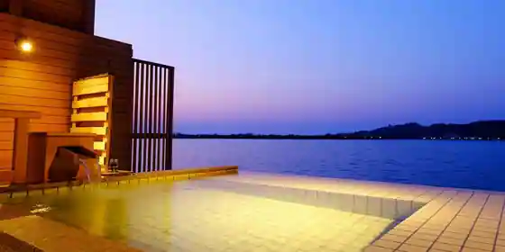
Hawai Onsen Sennen Tei
Inn at Hawai Onsen in Hawaionsen, Yurihama with local seafood dinners and lakeside location.
鯉の湯
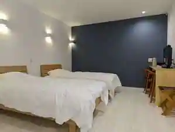
Koi No Yu
Inn at Nashihamachohawai Onsen in Hawaionsen, Yurihama with local seafood dinners.
しあわせひょうたんの宿 旅館 水郷
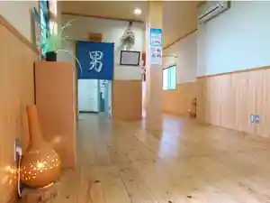
Shiawasehyotanno Yado Ryokan Suigo
Ryokan inn at Nashihamachohawai Onsen in Hawaionsen, Yurihama with free-flowing hot spring baths and in-room dining.
ビジネスホテル・山本
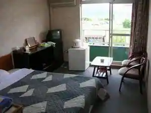
Business Hotel Yamamoto
Hotel at Kakushitsutennen Onsen in Hawaionsen, Yurihama with business travelers.
水景色の指定席 湖屋(KOYA)
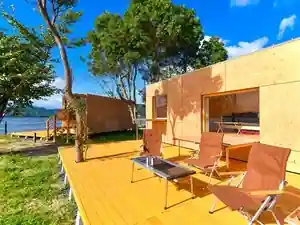
Suikei Iro No Shiteiseki Mizumi Ya (KOYA)
Inn at Nashihamachohawai Onsen in Hawaionsen, Yurihama with lakeside location.
全館源泉１００％かけ流し ゆの宿 彩香
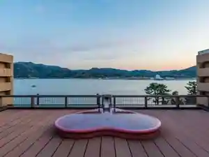
Zenkan Gensen 100 % Kake Nagashi Yuno Yado Ayaka
Inn at Kenagashinotennen Onsen in Hawaionsen, Yurihama with free-flowing hot spring baths.
はわい温泉鹿鳴館
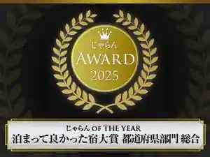
Hawai Onsen Rokumeikan
Inn at Hawai Onsen in Hawaionsen, Yurihama with lakeside location.
東郷館
Togo Kan
Inn at Mareruhawai Onsen in Hawaionsen, Yurihama with local seafood dinners.
望湖楼
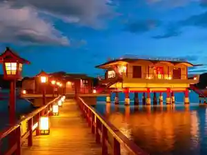
Boko Ro
Inn at Waranuzekkeito Onsen in Hawaionsen, Yurihama with open-air baths and scenic views.
湖上に浮かぶ絶景の宿 千年亭
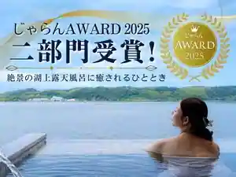
Kojo Ni Uka Bu Zekkei No Yado Sennen Tei
Inn at Nashihamachohawai Onsen in Hawaionsen, Yurihama with scenic views and lakeside location.
ファミリーロッジ旅籠屋・鳥取倉吉店
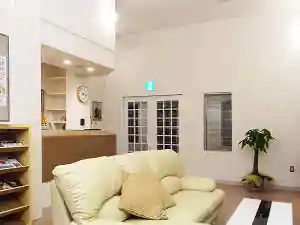
Famiri Lodge Hatago Ya Tottori Kurayoshi
Mountain lodge in Chowata, Yurihama with breakfast available and family-friendly stays.
湖畔の温泉宿 東郷温泉 水明荘
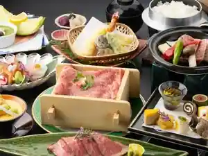
Kohan No Onsen Yado Togo Onsen Suimei So
Inn at Kohanno Onsen in Asahi, Yurihama with free-flowing hot spring baths and lakeside location.
Dining
千年亭
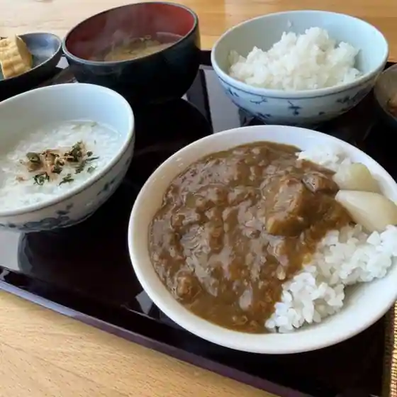
Sennen Tei
アロハカフェ
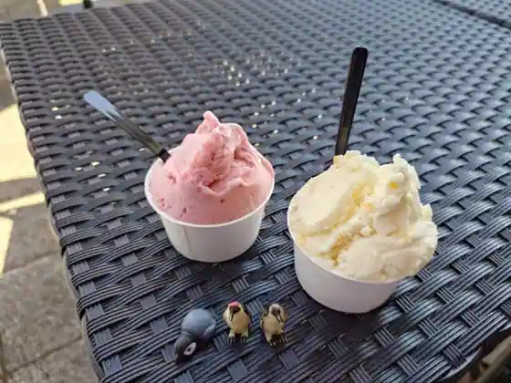
Aroha Cafe
海の駅とまり 元気海
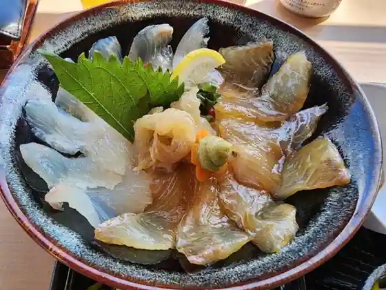
Umi No Eki Tomari Genki Umi
ハクセン
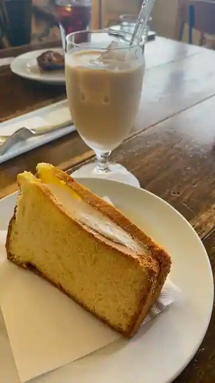
Hakusen
プティシュー
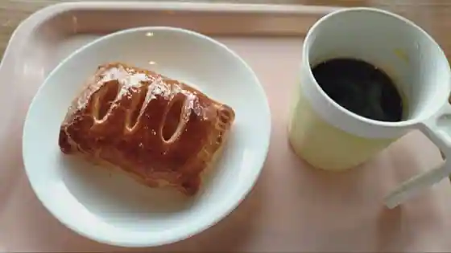
Puteishu
KOYA CAFE
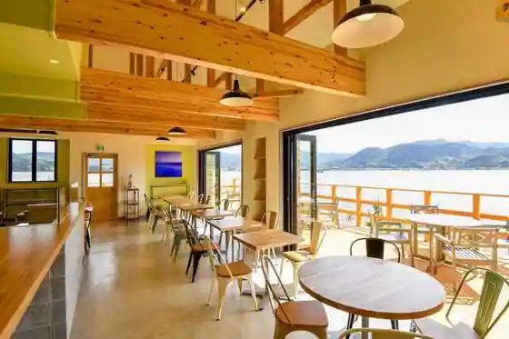
KOYA CAFE
燕趙園
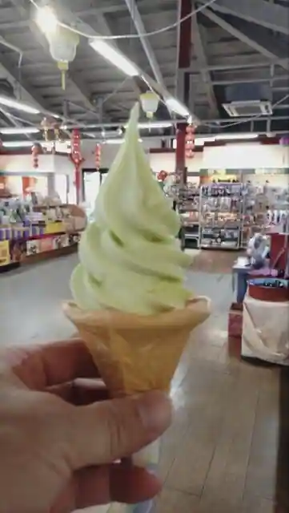
Encho Sono
前だ屋
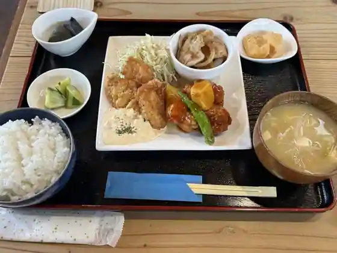
Mae Da Ya
水明荘
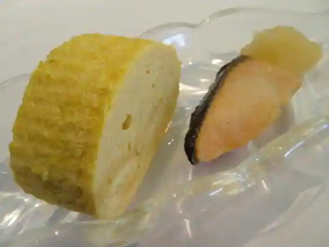
Suimei So
Lily Casa
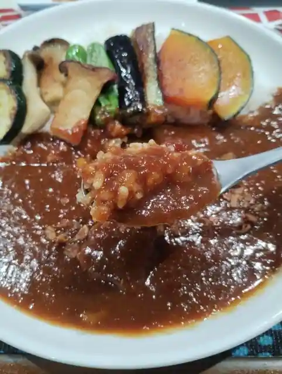
Lily Casa
Café ippo
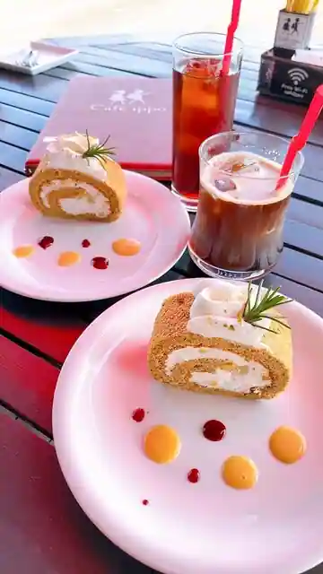
Caf E ippo
IGNIS COFFEE ROASTER
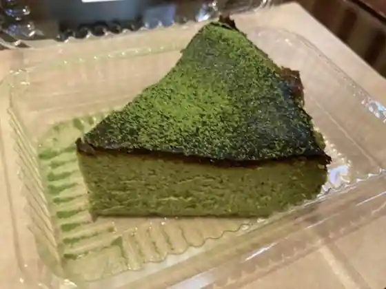
IGNIS COFFEE ROASTER
湖泉閣養生館
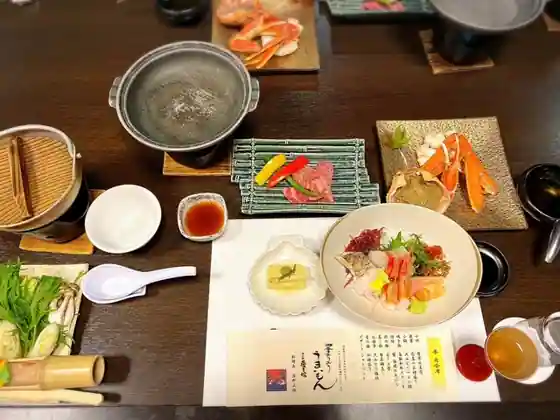
Mizumi Izumi Kaku Yojo Kan
笑酒 繁じょう
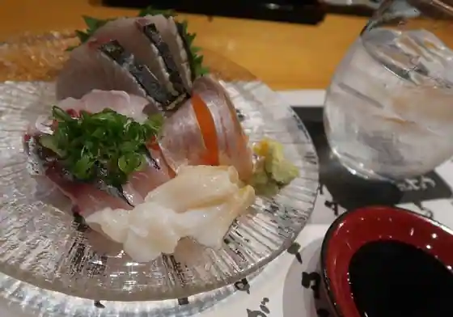
Warai Sake Han Jo
コーヒーハウス葡瑠満
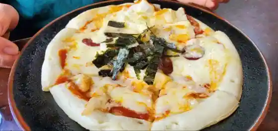
Coffee House Bu Ru Man
中華レストラン悟空
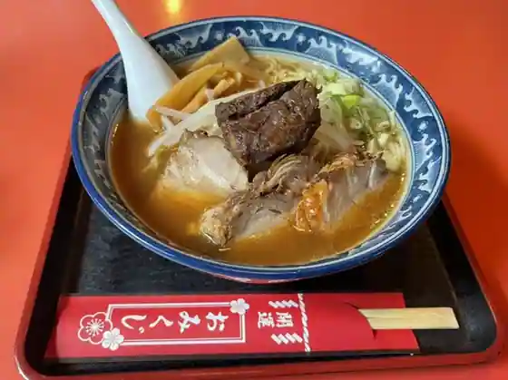
Chuka Restaurant Goku
パン工房 PAPAN ハワイ店
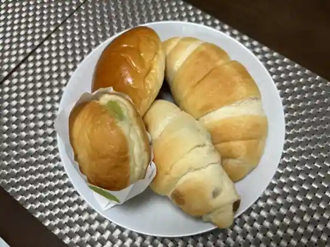
Bakery Kobo PAPAN Hawai
つるや
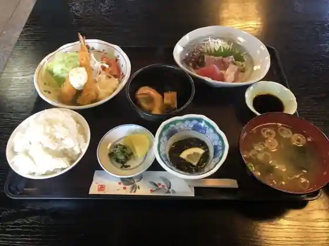
Tsuruya
道の駅 はわい
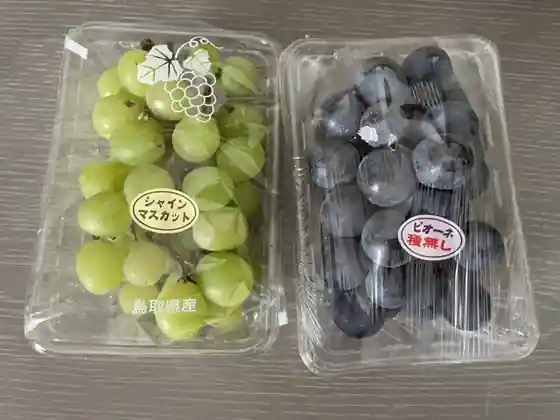
Michi No Eki Hawai
ゆの宿彩香
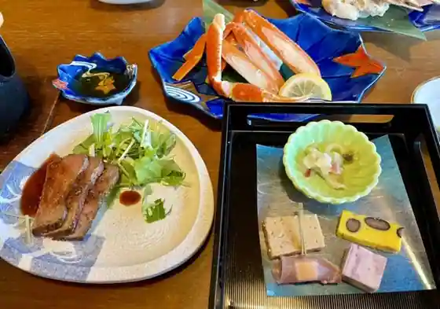
Yuno Yado Ayaka
松園
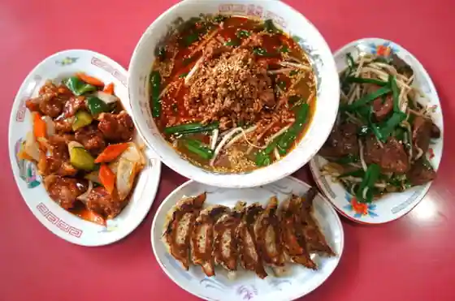
Shoen
シェル・ブール
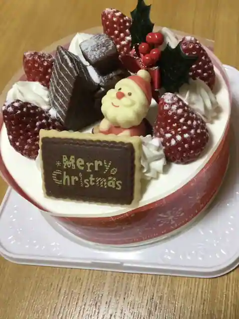
Shieru Buru
とん吉
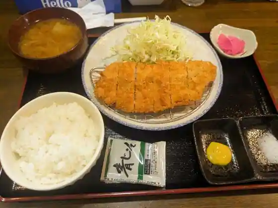
Ton Kichi
Sights
Roadside Station Hawai
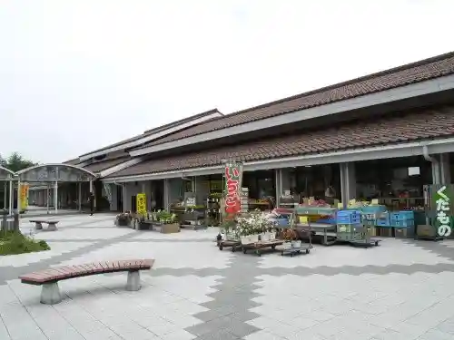
Hawai Onsen
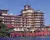
Togo Ike
Hawai Beach
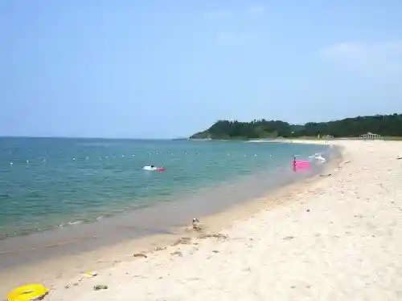
Togo Onsen
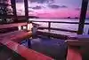
Guraundogorufu Village (Shiokaze no Oka Tomari)
Chugoku Garden Encho Sono
Nobana Baikei
Shitori Shrine (Hoki Ichi no Miya)
Fudo Taki
Togo Nashi Senka Ba
Togo Mizumi Hawai Rinkai Park
Hawai Fudoki Kan
Roadside Station Encho Sono
Hawai Onsen Togo Onsen no Ashiyu
Yu Ashisu Togo Ryuho Kaku
Ima Taki
Togo Lakeside no Rudikkuoku
Uno Coast
Hawai Yu Taun
Nashi Kari Experience
Shi Tsu Teami
Togo Ike Shuhen Cherry Blossoms
Nami Kan Sono
Ayu Kaeri Falls
Hashi Tsu no Han Kura
Yokihi no Sasayaki
San'in Togo
Take Toro Workshop